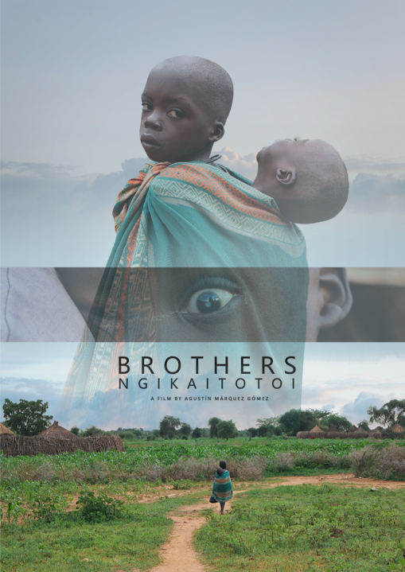
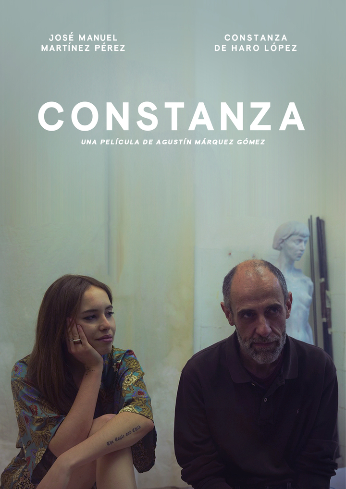
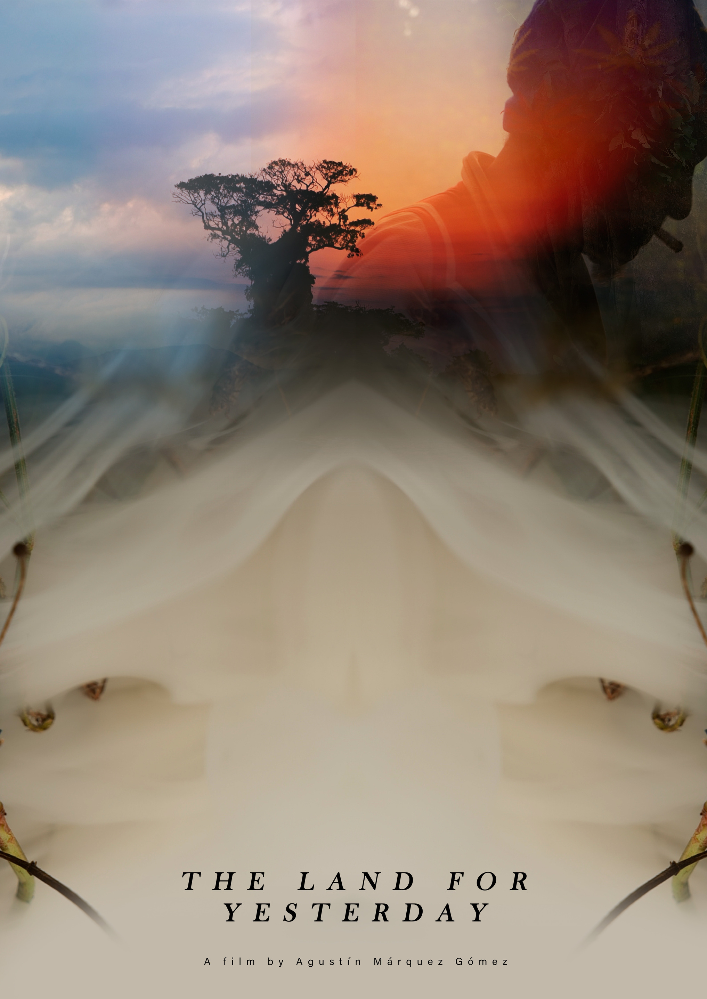
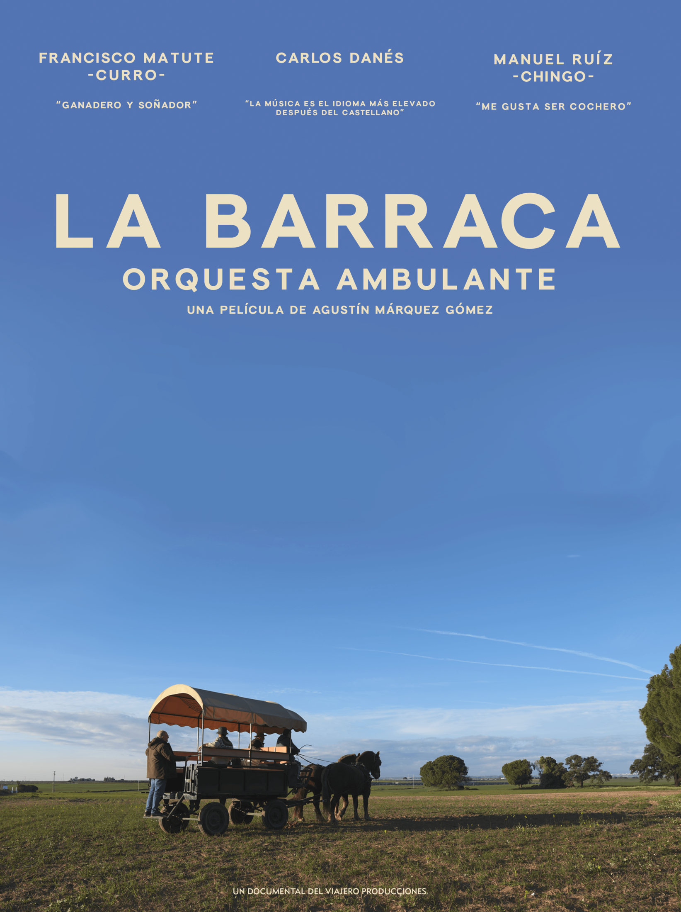

Moding and Lotyang are two brothers from the feeding program for the malnourished in Karamoja, Uganda. When the NGO África Directo pays for Lotyang's cataract surgery, both leave the village for their first time and travel with their mother to the only hospital that takes on the case.

Jose Manuel Martínez Pérez, sculptor, decides to make a sculpture different from the rest of the work he has done so far, to do so he works with Constanza, a young model, student of art history. For months they work together in the workshop and their relationship progresses as the work is completed.

The Land for Yesterday is a documentary made from the visual diary of a journey through Africa. A collection of three stories recorded in Uganda and Kenya documenting the daily lives of shepherds, gold diggers, nuns, sailors, fishermen, shamans and beekeepers.

The filmmaker Agustín Márquez and his pianist friend Carlos Danés decide to make a pilgrimage from Jaén to Santiago de Compostela, with an upright piano on top of a horse-drawn carriage. To do so, they contact two retired coachmen from El Rocio, Curro and Chingo, who will accompany them on their journey. They stop every day in the villages along the way to perform a free show of classical music and literature.